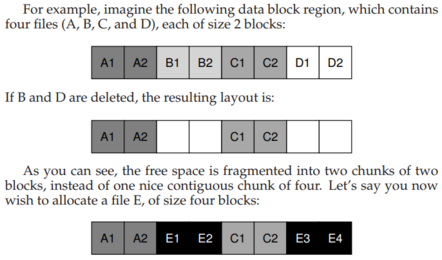
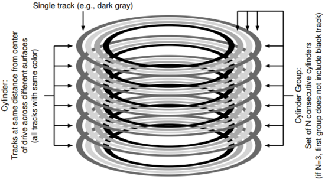
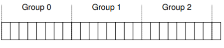
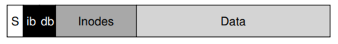
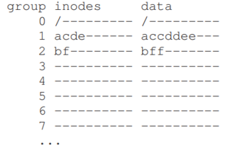
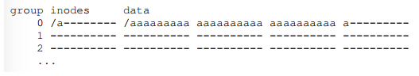
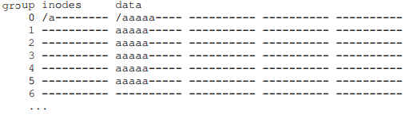
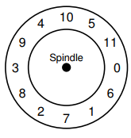

Old Unix file system: Simple and block size is small( 512B )

Problems: Performance terrible. Because old system treats disk like a random-access memory. delivering 2% overall disk bandwith:
* data spread all over the place, expensive positioning cose (data block could be very far away from its inode)
* file system getting fragmented

E gets spread across the disk, and as a result, when accessing E, you don’t get peak (sequential) performance from the disk. Rather, you first read E1 and E2, then seek, then read E3 and E4. This fragmentation problem happened all the time in the old UNIX file system, and it hurt performance.
small block size cause transferring data from disk inefficient.
Fast File system(FFS) from Berkeley group
let file system be “disk aware”. Keep the same api (open(), read(), write(), close()) but changing internal implementation.
Organize block into block group. cylinder groups 就是连续的柱面组合。


In order to use groups to store files. File system includes all the structures you might expect a file system within each group.

S: superblock.
ib: inode bitmap
db: data bitmap
Policies: How To Allocate Files and Directories
basic mantra: keep related stuff together, keep unrelated stuff far apart.
related data in same block group.
- data blocks of a file in the same group to avoid long seeks
- put files belong to same directory in the same cylinder group
see an example:
- assuem there are only 10 inodes and 10 data blocks in each group
- the three directories (the root directory /, /a, and /b) and
- four files (/a/c, /a/d, /a/e, /b/f) are placed within them per the FFS policies
- Assume the regular files are each two blocks in size, and that the directories have just a single block of data
- we use the obvious symbols for each file or directory (i.e., / for the root directory, a for /a, f for /b/f, and so forth)

FFS policy’s two positive things: - data blocks of each file are near file’s inode
- files in the same directory are near one another
The Large-File Exception
for large file, FFS does not save them all in one group, because it prevents subsequent “related” file from being placed within this block group, and may hurt file-access locality.
So instead of saving file like this:

actually saving like this:

increase chunk size can improve disk performance. because it can reduce the seek time(change to different group).
Assuming
- average positioning time for disk is 10ms
- disk transfer data at 40MB/s
if we want to spend half our time seeking between chunks and half our time transferring data(achieve 50% of peak disk performance), then we need to spend 10ms transferring data for every 10ms positioning.
So the question becomes: how big does a chunk have to be in order to spend 10 ms in transfer?
the answer is 40M/s*10ms = 400KB （因为每次peak都要耗费10ms，所以50%效率就是还有10ms用来传输，那么一个chunk至少满足这个要求，才会不用再次进行seek）
if we want to achieve 90% of peak bandwith:
the answer is 40M/s*90ms = 3.6MB （因为每次peak都要耗费10ms，所以90%效率就是还有90ms用来传输，那么一个chunk至少满足这个要求，才会不用再次进行seek）
FFS did not use this type of calculation in order to spread large files across groups. based on the structure of the inode itself:
- The first twelve direct blocks were placed in the same group as the inode;
- each subsequent indirect block, and all the blocks it pointed to, was placed in a different group
With a block size of 4KB, and 32-bit disk addresses, this strategy implies that every 1024 blocks of the file (4MB) were placed in separate groups
A Few Other Things About FFS
If use 4KB block, when many files are 2KB, then it will waste half of disk size, causing internal fragmentation.
The solution is FFS introduce sub-blocks, which is 512-byte little blocks that file system could allocate to files. So for the 2KB small files, then it wil occupy 4 sub-blocks and not waste the entire 4KB block. As file grew, the FS will continue allocating 512-byte sub-blocks to it untill it accuire a full 4KB of data. At this point, FFS will find a 4KB block, copy the sub-blocks into it, and free the sub-blocks for future use.
But again, this will waste time for seeking 512byte subblocks. The FFS modifying the libc library and buffer write and then issue 4KB chunks to the file system.
Before the SCSI and other modern device interface, at the time, disks were much less sophisticated and required the host CPU to control their operation in a more hands-on way. A problem arose in FFS when a file was placed on consecutive sectors of the disk.
imagine this is the overlook of a disk, number indicates different blocks.
In particular, the problem arose during sequential reads. FFS would first issue a read to block 0; by the time the read was complete, and FFS issued a read to block 1, it was too late: block 1 had rotated under the head and now the read to block 1 would incur a full rotation. (简而言之，就是发出读block0命令，刚发读取block1命令，block1已经被跳过了，所以需要等disk再转一圈）

FFS could use this layout to solve rotation problem.
FFS was smart enough to figure out for a particular disk, how many blocks it should skip in doing layout in order to avoid the extra rotations. This technique was called parameterization. (这时候你会有疑问，这样的话就只能达到50%的throughput)
Modern disk, in order to solve this problem, internally read the entire track in and buffer it in an internal disk cache( track buffer). Then
on subsequent reads to the track, the disk will just return the desired data from its cache.(利用disk cache 解决 throughput 问题)